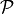
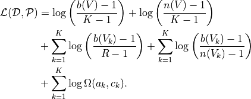

Regionalization with Distributional Data
Tutorial
Code to perform spatial regionalization of distributional data using method derived in “Spatial regionalization as optimal data compression” (Kirkley, 2022, https://arxiv.org/pdf/2111.01813).
Inputs adjlist, dists, pops, where:
adjlist: List of lists, representing the adjacency list of integer node indices for each unit.
dists: 2D numpy array with normalized probability mass function for each unit, representing the distribution of different categories.
pops: Array representing the populations of the units.
Outputs a regionalization result of the form inverse compression ratio, cluster labels, distributions, where:
inverse compression ratio: The ratio of the description length after clustering to the description length of naive transmission.
cluster labels: List of cluster labels for all units, ordered by their index in the input adjlist.
distributions: The distributions input to the algorithm.
Algorithm minimizes the following Minimum Description Length (MDL) clustering objective over spatial partitions  (Eq. 8 in https://arxiv.org/pdf/2111.01813):

MDL Regionalization
This module provides a class and functions for performing MDL (Minimum Description Length) regionalization with distributional data.
Function |
Description |
|---|---|
Initialize the MDL_regionalization class. |
|
MDL_regionalization.MDL_regionalization(adjlist, dists, pops) |
Perform MDL regionalization. |
Convert a list of strings to a list of integers. |
|
Compute the logarithm of the binomial coefficient. |
|
Compute the logarithm of the multinomial coefficient. |
|
MDL_regionalization.MDL_regionalization.log_num_bin_sizes(n, K) |
Compute the logarithm of the number of ways to partition integer n into k non-negative integers. |
MDL_regionalization.MDL_regionalization.log_omega(row_sums, col_sums) |
Compute the logarithm of the number of non-negative integer matrices with specified row and column sums. |
Compute the description length of a cluster of spatial units. |
|
Compute the global description length for all clusters of spatial units. |
|
Generate a random key for a new cluster. |
|
MDL_regionalization.MDL_regionalization.cluster_merge(key1, key2, update=False) |
Merge two clusters and update the description length. |
Reference
Description: Initialize the MDL_regionalization class.
Description: Perform MDL spatial regionalization.
Parameters:
- adjlist: List of lists, representing adjacency list of integer node indices.
- dists: 2D numpy array with normalize probability mass function for each unit.
- pops: Populations of units.
- Returns:
float: Inverse compression ratio of data.
list: Cluster labels for all units.
numpy.ndarray: Distributions input to algorithm.
Description: Convert a list of strings to a list of integers.
Parameters:
- l: List of strings.
- Returns:
list: List of integers.
Description: Compute the logarithm of the binomial coefficient.
Parameters:
- n: Total number of elements.
- K: Number of elements to choose.
- Returns:
float: Logarithm of the binomial coefficient.
Description: Compute the logarithm of the multinomial coefficient.
Parameters:
- ns: List of counts.
- Returns:
float: Logarithm of the multinomial coefficient.
Description: Compute the logarithm of the number of bin sizes.
Parameters:
- n: Total number of elements.
- K: Number of bins.
- Returns:
float: Logarithm of the number of bin sizes.
Description: Compute the logarithm of the number of non-negative integer matrices with specified row and column sums.
Parameters:
- row_sums: Array of row sums.
- col_sums: Array of column sums.
- Returns:
float: Logarithm of the number of non-negative integer matrices.
Description: Compute the description length of a cluster of spatial units.
Parameters:
- cluster: Set of spatial unit indices corresponding to the cluster.
- Returns:
float: Description length of the cluster.
Description: Compute the global description length for all clusters.
Parameters:
- clusters: List of clusters.
- Returns:
float: Global description length for all clusters.
Description: Generate a random key for a new cluster.
- Returns:
str: Random key for a new cluster.
Description: Merge two clusters and update the description length.
Parameters:
- key1: Key of the first cluster.
- key2: Key of the second cluster.
- update: Boolean indicating whether to update the clusters.
- Returns:
tuple: Tuple containing the minimum change in description length and a boolean indicating if the merge was successful.
Demo
Example Code
Step 1: Import necessary libraries
from paninipy.distributional_regionalization import MDL_regionalization
import matplotlib.pyplot as plt
import sys
import os
import pandas as pd
import numpy as np
import geopandas as gpd
from shapely.geometry import Point
from matplotlib.colors import ListedColormap
Step 2: Load and prepare the data
data_dir = r"D:\Research HKU\PYPI_lib\ScholarCodeCollective\distributional_regionalization"
sys.path.append(data_dir)
nodelist = pd.read_csv(os.path.join(data_dir, 'metro_tract_metadata.csv'))
edgelist = pd.read_csv(os.path.join(data_dir, 'metro_network_edgelists.csv'))
nodelist = nodelist[nodelist['metro'] == 'New_Haven-Milford--CT']
nodelist['tract_index'] = range(nodelist.shape[0])
edgelist = edgelist[edgelist['tract1'].isin(nodelist['tractID'].values) & edgelist['tract2'].isin(nodelist['tractID'].values)]
tract2index = dict(zip(nodelist['tractID'].values, nodelist['tract_index'].values))
edgelist['tract1_index'] = [tract2index[t] for t in edgelist['tract1'].values]
edgelist['tract2_index'] = [tract2index[t] for t in edgelist['tract2'].values]
dists = np.array([eval(s) for s in nodelist['races2010'].values])
pops = nodelist['pop2010'].values
adjlist = [[] for _ in range(nodelist.shape[0])]
for e in edgelist[['tract1_index', 'tract2_index']].values.tolist():
i, j = e
adjlist[i].append(j)
adjlist[j].append(i)
Step 3: Run the MDL regionalization algorithm
mdl_instance = MDL_regionalization("example")
inverse_compression_ratio, cluster_labels, dists = mdl_instance.MDL_regionalization(adjlist, dists, pops)
print(inverse_compression_ratio)
print(cluster_labels)
Step 4: Load geometries and map clusters
geometry_data_dir = 'D:\Research HKU\mobility\geometry_trct'
print("Loading geometries...")
geometries_us = gpd.read_file(os.path.join(geometry_data_dir, 'Tract_2010Census_DP1_ct.shp'))
geometries_us['tractID'] = geometries_us['GEOID10'].astype(str).str[1:]
required_columns = ['tractID', 'geometry']
for col in required_columns:
if col not in geometries_us.columns:
raise ValueError(f"Missing required column in geometries_us: {col}")
nodelist['tractID'] = nodelist['tractID'].astype(str)
cluster_df = pd.DataFrame({
'tractID': nodelist['tractID'],
'cluster': cluster_labels
})
gdf_clusters = geometries_us.merge(cluster_df, on='tractID', how='right')
cluster_centroids = gdf_clusters.dissolve(by='cluster').centroid
unique_clusters = gdf_clusters['cluster'].dropna().unique()
unique_clusters.sort()
colors = plt.cm.tab20(np.linspace(0, 1, 20))
custom_cmap = ListedColormap(colors[:len(unique_clusters)])
Step 5: Define the visualization function and plot the results
def plot_combined_visualization(gdf_clusters, cluster_centroids, inverse_compression_ratio, dists, unique_clusters):
fig, (ax1, ax2) = plt.subplots(2, 1, figsize=(14, 18), gridspec_kw={'height_ratios': [2, 1]})
gdf_clusters.plot(column='cluster', cmap=custom_cmap, legend=False, ax=ax1, edgecolor='black', linewidth=0.5)
ax1.set_title(f'Clustering Results for New Haven-Milford, CT\nInverse Compression Ratio: {inverse_compression_ratio:.2f}')
ax1.set_xlabel('Longitude')
ax1.set_ylabel('Latitude')
ax1.grid(False)
handles = [plt.Line2D([0], [0], marker='o', color='w', markerfacecolor=custom_cmap(i), markersize=10, label=f'Cluster {int(cluster)}')
for i, cluster in enumerate(unique_clusters)]
ax1.legend(handles=handles, title='Clusters', loc='best')
race_groups = ['Non-Hispanic White', 'Non-Hispanic Black', 'Asian', 'Hispanic', 'Other']
bar_width = 0.1
for i, cluster_id in enumerate(unique_clusters):
cluster_data = gdf_clusters[gdf_clusters['cluster'] == cluster_id]
if cluster_data.shape[0] > 0:
average_distribution = dists[cluster_data.index].mean(axis=0)
positions = np.arange(len(race_groups)) + i * bar_width
ax2.bar(positions, average_distribution, bar_width, color=custom_cmap(i), label=f'Cluster {int(cluster_id)}')
ax2.set_xlabel('Race Groups')
ax2.set_ylabel('Average Distribution')
ax2.set_xticks(np.arange(len(race_groups)) + bar_width * len(unique_clusters) / 2)
ax2.set_xticklabels(race_groups, ha='center')
ax2.legend(title='Clusters', loc='best')
ax2.set_title('Combined Histogram for All Clusters')
plt.tight_layout()
plt.savefig('MDL_regionalization_demo.png', bbox_inches='tight', dpi=200)
plt.show()
plot_combined_visualization(gdf_clusters, cluster_centroids, inverse_compression_ratio, dists, unique_clusters)
Example Output
Example output showing the MDL regionalization results for New Haven-Milford, CT using 2010 census data indicating the ethnoracial distribution within each spatial unit’s (census tract’s) population. The top plot shows the spatial distribution of the clusters of spatial units, indicated by different colors. The bottom plot shows the fraction of the population within each cluster falling into the categories [‘Non-Hispanic White’, ‘Non-Hispanic Black’, ‘Asian’, ‘Hispanic’, ‘Other’].
Paper source
If you use this algorithm in your work, please cite:
A. Kirkley, Spatial regionalization based on optimal information compression. Communications Physics 5, 249 (2022). Paper: https://arxiv.org/abs/2111.01813